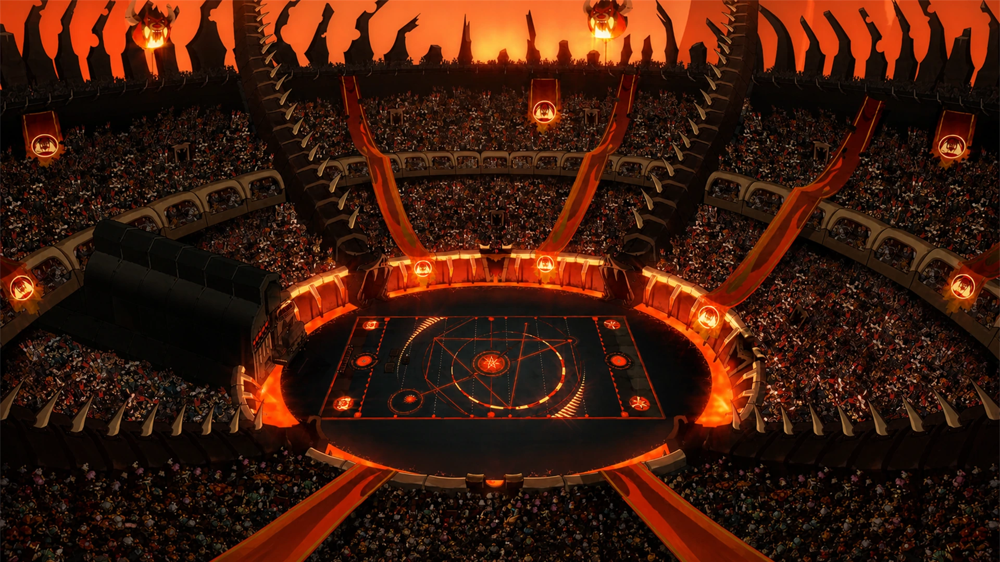
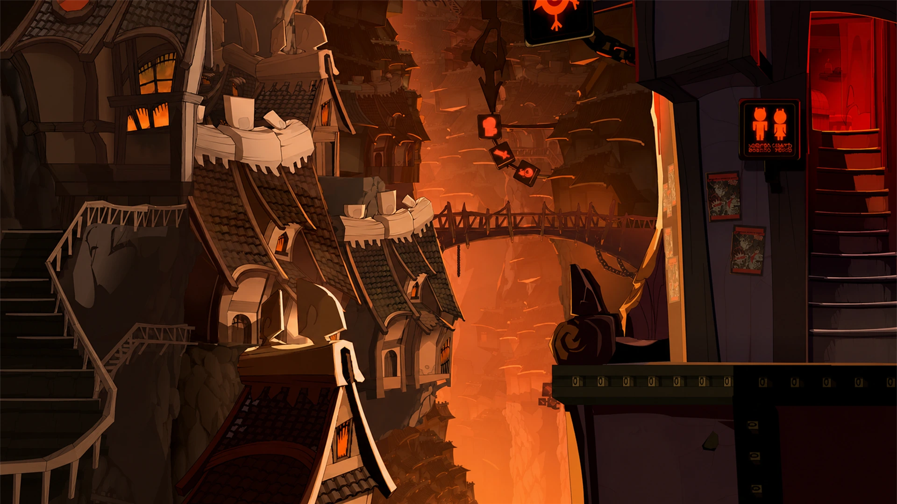

Forgée dans les entrailles brûlantes des landes de Sidimote, Brâkmar est la grande cité sombre du Monde des Douze et l’éternelle rivale de Bonta. Ville du vice, de l’ambition et de la brutalité, elle s’est imposée au fil des siècles comme le refuge des criminels, des mercenaires, des contrebandiers et des adorateurs du démon Rushu.
Construite au-dessus d’immenses failles magmatiques, Brâkmar possède une architecture unique mêlant métal noirci, chaînes, fournaises et plateformes suspendues. La cité est divisée en quatre grands quartiers, l’Enclume, la Cuirasse, la Marmite et l’Ancre, tous reliés entre eux par un vaste réseau de téléphériques surplombant les abysses en fusion.
Selon les légendes, Brâkmar aurait émergé en une seule nuit, le 12 Descendre de l’an 24. Certains racontent que Rushu lui-même aurait participé à sa création en violation du Pacte divin, tandis que d’autres attribuent cette prouesse à Hyrkul le Tendancieux.
Très rapidement, l’influence grandissante de la cité noire pousse les dieux et leurs fidèles à réagir. Au nord des plaines de Cania s’élève alors Bonta, destinée à devenir le contrepoids lumineux de Brâkmar. Cette opposition donnera naissance à l’un des conflits les plus célèbres de l’histoire du Krosmoz, la Bataille de l’Aurore Pourpre, en l’an 26, durant laquelle les armées d’Hyrkul sont repoussées aux portes de Bonta.
Malgré plusieurs défaites historiques, Brâkmar ne disparaît jamais réellement. La cité sombre traverse les siècles en changeant régulièrement de dirigeants et de régimes politiques, oscillant entre théocratie démoniaque, régence aristocratique et dictature militaire.
Au début du VIIe siècle, la ville est dirigée par le Triumvirat composé de Domen, Ralgen et Kalfen. Mais les désaccords constants entre les trois dirigeants plongent la cité dans l’immobilisme jusqu’à l’arrivée d’Oto Mustam.
Chef de la milice brâkmarienne, Oto renverse le Triumvirat, emprisonne ses membres dans les geôles de la cité et transforme progressivement Brâkmar en une véritable dictature militaire. Sous son autorité, la milice se structure autour de trois grands ordres, l’Œil Putride, le Cœur Sanglant et l’Esprit Malsain.
À Brâkmar, la violence fait partie du quotidien. Les ruelles sombres abritent des tavernes malfamées, des trafics clandestins et une criminalité omniprésente. Pourtant, malgré sa réputation sinistre, la cité possède aussi une économie particulièrement dynamique fondée sur le commerce illégal, la contrebande et l’industrie métallurgique.
Les Brâkmariens pratiquent également l’esclavage, notamment envers les Ouginaks, souvent capturés puis réduits en servitude à l’aide de fameuses croquettes apaisantes conçues pour les rendre dociles.
Durant l’Ère du Wakfu, Brâkmar conserve cette image de cité brutale et agressive, mais demeure aussi l’une des puissances militaires majeures du Monde des Douze. Malgré les guerres, les coups d’État et les catastrophes successives, la ville noire continue de prospérer, portée par une philosophie simple, dans l’ombre et le chaos, seuls les plus forts survivent.
Visions de Brakmar
 Cité de lave
Cité de lave

Arène brakmarienne
Ruelles sombres